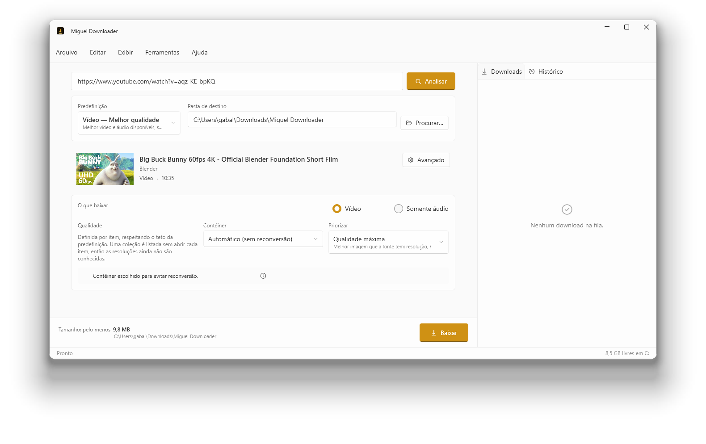

Cole um link.
Receba o arquivo.
Baixador de vídeo e música para Windows. Mostra apenas os formatos que aquele site publica de verdade, e confere o resultado antes de dizer que terminou.

Todo baixador promete qualidade máxima. Este mostra a lista de formatos que o site respondeu, baixa o que você escolheu, e só marca como concluído depois de abrir o arquivo e confirmar que ele toca.
O que ele faz
Quatro coisas, bem feitas.
FORMATOS
Só o que existe
Resolução, codec, legendas e faixas de áudio vêm da resposta do próprio site. Se aquele vídeo não tem 4K, 4K não aparece na lista para você escolher e se frustrar depois.
VERIFICAÇÃO
Confere antes de dizer que acabou
Terminado o download, o ffprobe abre o arquivo e confirma que ele decodifica. Se aparece como pronto, ele toca.
COLEÇÕES
Playlists inteiras
Playlists, álbuns e canais são listados item a item, e você marca o que quer antes de começar. Testado com cinco mil itens numa fila só.
PRIVACIDADE
Não observa você
Sem telemetria, sem conta, sem identificador. Configurações e histórico ficam no seu computador. Leia a política.
O que ele não faz
Um baixador que promete tudo está mentindo sobre alguma coisa.
Então aqui está a outra metade da lista, na primeira página, e não escondida no rodapé.
Não contorna DRM
Spotify, Apple Music, TIDAL e Amazon criptografam o áudio. O programa lê o catálogo público dessas plataformas e procura a gravação onde o áudio é servido abertamente. Não quebra a criptografia de ninguém.
Não inventa qualidade
HDR é propriedade da fonte. Onde o site publica só SDR, o controle de HDR nem aparece, e nenhuma opção promete resolução que o vídeo não tem.
Não garante um site para sempre
Sites mudam sem avisar. Quando um muda, o extrator embutido é atualizado e volta a funcionar. Até lá, aquele endereço pode falhar.
Medido, não copiado
Cada linha desta tabela foi obtida rodando o programa.
O reconhecimento de link não é uma lista fechada: o yt-dlp embarcado traz 1.752 extratores, e um endereço desconhecido é tentado em vez de recusado. A tabela é o que foi conferido à mão.
| Site | Análise | Download | O que a fonte entrega |
|---|---|---|---|
| YouTube | sim | sim | vídeo e áudio separados, até 2160p60, HDR10 |
| YouTube Music | sim | sim | áudio, metadados e capa |
| TikTok | sim | sim | vídeo já com áudio, até 1024p |
| X (Twitter) | sim | sim | vídeo separado, sem login para post público |
| sim | sim | vídeo e áudio separados (VP9) | |
| sim | sim | vídeo e áudio separados | |
| SoundCloud | sim | sim | só áudio, abre no fluxo de música |
| exige sessão | com cookies | login obrigatório na maioria dos posts | |
| Vimeo | exige sessão | com cookies | o cliente web recusa acesso anônimo |
Baixar
O arquivo, e como conferir que é ele mesmo.
Sites de download são o lugar da internet onde mais se troca um arquivo por outro. Aqui está a soma do que foi publicado, para você comparar com o que chegou.
Versão portátil (194,2 MB) Todas as versões Código-fonte
O instalador ainda não é assinado, então o Windows mostra um aviso do SmartScreen na primeira execução. Clique em Mais informações e depois em Executar assim mesmo.
- Versão
- 1.0.0
- Tamanho
- 198,6 MB
- Publicado
- Requisitos
- Windows 10 1809 (64 bits)
- Espaço
- cerca de 700 MB
f1203120db6c1f5518a5b4b233adba447f855e70151388b95a32d43623ab0b24
Get-FileHash .\MiguelDownloaderApp-win-Setup.exe -Algorithm SHA256